Helbreath Survivors
Un juego de supervivencia contra hordas, al estilo de Vampire Survivors, hecho con los gráficos, sonidos y monstruos del MMORPG coreano Helbreath (2000). Se juega en el navegador, en PC y en el móvil.
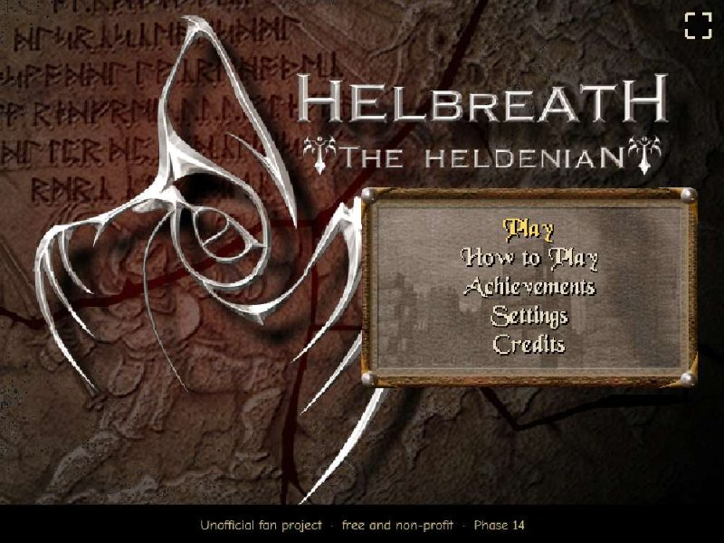
Qué es
En un Survivors el jugador solo mueve a su personaje. Las armas atacan solas. Cada vez llegan más monstruos, que sueltan gemas de experiencia al morir. Al subir de nivel eliges una mejora entre tres cartas, y la partida termina cuando mueres o cuando matas al jefe final y sales por su portal.
Lo especial de este proyecto es que todo sale de Helbreath: el mapa, los personajes compuestos por capas (cuerpo, pelo, armadura, arma), las animaciones, las explosiones de los hechizos, los sonidos, la música y la fuente dibujada que ves en los títulos de esta guía. Los monstruos copian el comportamiento del servidor original: su ritmo de ataque, su alcance, su velocidad y su tendencia a huir.
El juego está solo en inglés. Esta guía está en español. Todas las imágenes salen del juego en marcha.
Cómo es una partida
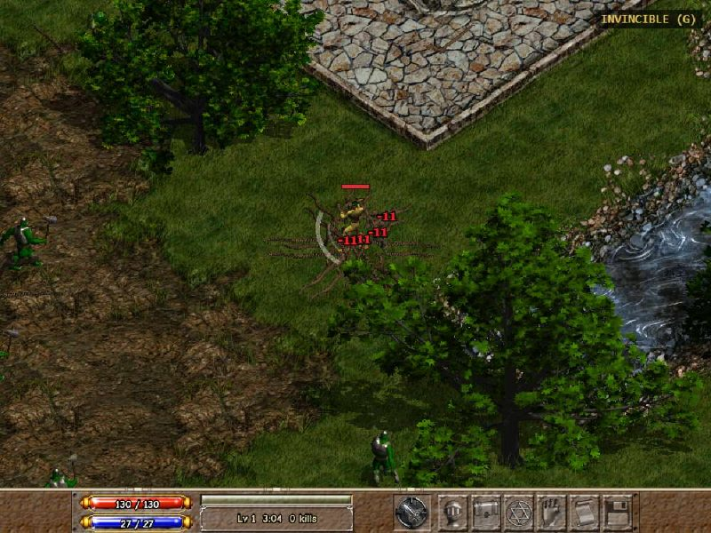
- Menú principal → Play.
- Create New Character, la pantalla original de creación: eliges Warrior o Magician.
- Apareces en Bleeding Isle, una isla de 150×150 casillas, casi toda libre de obstáculos, con río, bosque y ruinas.
- Te mueves. Tu arma o hechizo ataca sola al enemigo más cercano.
- Recoges las gemas. Al subir de nivel, el juego se para y eliges 1 de 3 cartas.
- Cada pocos minutos cambia la oleada y hay eventos: rodeos y estampidas. En los minutos 5 y 8 llegan minijefes; en el 12, el Fire Wyvern.
- Si matas al Wyvern, abres su cofre y cruzas el portal: ganas. Si mueres, Game Over.
Controles
| Acción | Teclado / ratón | Mando | Móvil |
|---|---|---|---|
| Moverse (8 direcciones) | WASD, flechas o ratón | Stick izquierdo | Joystick que aparece donde pones el dedo |
| Atacar | Automático | ||
| Elegir carta / confirmar | Enter Espacio o clic | A | Tocar |
| Panel de stats | C o el icono del casco | Y | Botón del casco |
| Pausa | Esc o el icono del disquete | Start | Botón "II" arriba a la derecha |
| Volver | Esc Retroceso | B | Tocar |
En pantalla no hay ningún texto de controles: todos se explican en How to Play, en el menú principal y en la pausa. Si se desconecta el mando, la partida se pausa sola. En el móvil, el juego pide girar a horizontal y ofrece pantalla completa (salvo en iPhone, donde Safari no lo permite).
Personajes
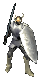
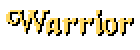
Cuerpo a cuerpo. Tajo en arco hacia el enemigo más cercano; golpea a varios a la vez. Mejora con Str.
Empieza con Dagger, camisa, pantalón y botas.
Str 14 · Vit 12 · Dex 14 · Int 10 · Mag 10 · Chr 10
Cada nivel: +1 Str, +1 Vit
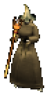
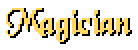
A distancia. Lanza hechizos al enemigo más cercano. Desbloquea hechizos con Int y les sube el daño con Mag.
Empieza con Energy Bolt, corpiño, falda, botas y varita.
Str 12 · Vit 10 · Dex 10 · Int 14 · Mag 14 · Chr 10
Cada nivel: +1 Int, +1 Mag
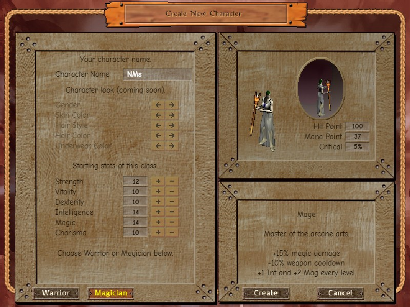
Los personajes de arriba llevan equipo conseguido en partida; cada pieza cambia el dibujo. El nombre es fijo por ahora: "NkII" para el Guerrero y "NMs" para la Maga. Hay un tercer personaje previsto, el Archer, aplazado.
Stats
Los seis stats de Helbreath. Suben solos con cada nivel (Guerrero: +1 Str y +1 Vit; Maga: +1 Int y +1 Mag) y con las cartas "+3".
| Stat | Qué hace en el juego |
|---|---|
| Str | Daño físico: +3 % por punto sobre 10. Requisito de armas y armaduras del Guerrero. |
| Vit | Vida máxima, y cura poco a poco: 0,02 de vida por segundo por punto de Vit. |
| Dex | Velocidad de movimiento y de ataque: +1 % por punto sobre 10. |
| Int | Requisito de hechizos y de ropa de mago; algo de maná. |
| Mag | Daño mágico: +3 % por punto sobre 10 (igual que Str). También da maná. |
| Chr | Crítico: 5 % de base y +1 % por punto sobre 10. Hace daño doble, con número amarillo y "!". |
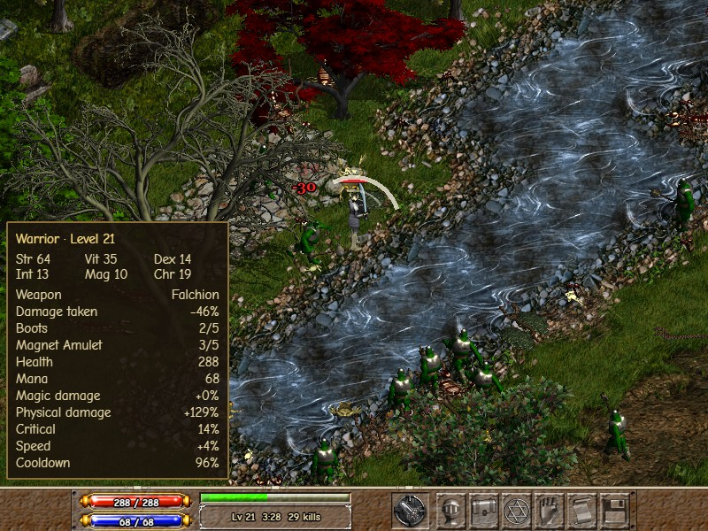
Los requisitos son los del original multiplicados por 0,4, para que quepan en una partida de 12 minutos. Las espadas hacen ×1,5 de daño y Energy Strike lanza descargas de 8 de daño: así el Guerrero y la Maga matan al Wyvern en un tiempo parecido (unos 2:10 a 2:50 en partidas simuladas).
Armas y hechizos
Llevas una sola arma o hechizo a la vez. Las armas no tienen nivel: mejoran cuando tus stats crecen y cuando cambias al siguiente eslabón de su familia. Una carta te ofrece el siguiente eslabón o cambiar a otra familia, mostrando qué ganas y qué pierdes. Entre paréntesis, el stat que pide cada uno.
Warrior
Short Swords: rápidas y de poco alcance.
Long Swords: lentas, arco ancho y más empuje.
Ya existen en datos, pero apagadas: Hammer, Axe y Fencing.
Magician
Energy
Fire
Previstas sin datos todavía: Lightning, Ice y Meteor.
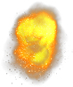
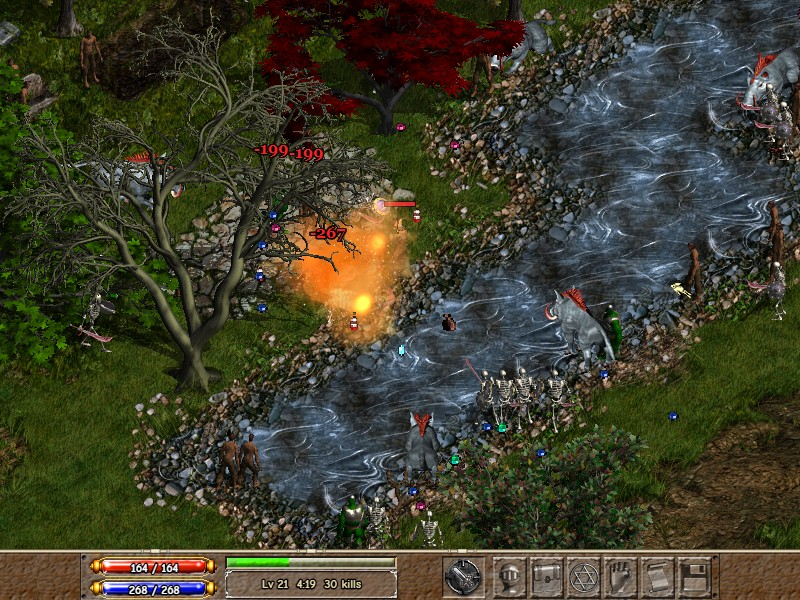
Detalles que imitan al original: el personaje se planta un instante al golpear o lanzar (no "patina"), el tajo suena justo cuando cae el golpe, y al correr se oyen pasos y sale polvo bajo los pies.
Armaduras
Cada pieza quita un porcentaje del daño recibido (hasta un máximo del 60 %) y cambia el aspecto del personaje al momento.
- Warrior, con requisito de Str: cuerpo (Leather, Scale, Chain y Plate Mail), casco y escudo.
- Magician, con requisito de Mag: túnica (Robe → Wizard Robe) y gorro (Wizard Cap → Wizard Hat). Además suben el daño mágico.
Subir de nivel
Al subir de nivel el juego se para y salen 3 cartas. Como mucho 2 son de objeto; el resto, de stat. Cada carta muestra los números de antes y después.
| Carta | Qué da |
|---|---|
| Stat | +3 puntos a un stat. Siempre disponible. |
| Eslabón | El siguiente arma o hechizo de tu familia, si cumples el requisito. |
| Cambio de familia | Lo mejor que puedes llevar de otra familia. |
| Armadura o ropa | La mejor pieza que permite tu stat. Se equipa sola. |
| Pasiva | Boots (+8 % de velocidad por rango) o Magnet Amulet (+30 % de radio para atraer gemas). 5 rangos. |
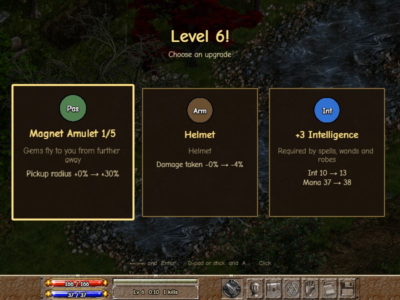
Objetos y buffs
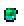
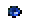
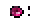
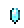
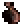
El cofre da uno de estos buffs durante 20 s. Se pueden tener los dos a la vez; abajo a la derecha se ve cuánto le queda a cada uno. El nombre sube sobre el personaje con la fuente del original:
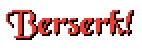
+40 % de daño, brillo rojo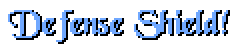
−40 % de daño recibido, aura azulPoción e imán desaparecen a los 60 s. El imán se dibuja con el cristal del original, porque Helbreath no tiene sprite de imán; el cofre, con la bolsa de oro.
Bestiario 15 monstruos y 3 jefes en Bleeding Isle
Todos con sus sprites y sonidos originales. Su comportamiento sale del código del servidor de Helbreath:
- Ritmo de ataque real. Atacan con animación y sonido; el golpe solo hace daño si sigues a su alcance cuando cae.
- Alcance real. El Ettin, el Ogre y el Cyclops pegan desde 3 casillas; el Wyvern, desde 7. El Mage-Orc lanza bolas de fuego lentas desde 5 (usa el dibujo del Orc).
- Pega y huye. Un 20 % pega una o dos veces y se aleja. Con muy poca vida, los pequeños suelen huir; los grandes casi nunca.
- Velocidad real, algo acelerada para que lleguen antes. El jugador es unas 2 veces más rápido que ellos.
- XP: cada monstruo da una quinta parte de su vida en experiencia (un Slime, 2; un Ogre, 104). Los grandes sueltan diamantes.
Los monstruos se reparten en tres grupos. Los comunes aparecen en todos los mapas; cada mapa añade los suyos, más fuertes y menos numerosos, y sus jefes. El Dark Elf (el arquero) está desactivado: sus flechas eran molestas. Otros monstruos ya preparados (Bunny, Troll, Werewolf, Lich, Gargoyle, Minotaur...) esperan a otros mapas.
Comunes a todos los mapas (de más débil a más fuerte)
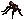
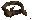
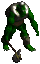
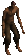
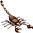
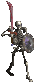
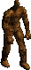
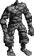
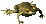
Propios de Bleeding Isle (salen desde el minuto 5:30, pocos)
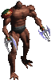
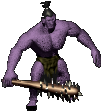
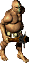
Jefes
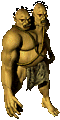
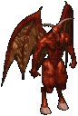
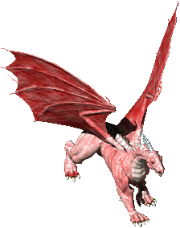
Ningún jefe retrocede al ser golpeado, y ninguno mata de uno o dos golpes: sus golpes quitan como mucho un tercio de la vida del jugador.
Oleadas y jefes línea de tiempo a escala
Cada evento se anuncia en grande con la fuente del original:
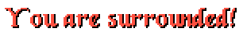
Estampida
Un bloque de orcos (minuto 4:30) o de ranas (9:30), en tres filas, sale de un lado de la pantalla alineado contigo y la cruza en línea recta, 3,5 veces más rápido de lo normal. Si te alcanza, te pega; si te apartas, pasa de largo y después te persigue como los demás.
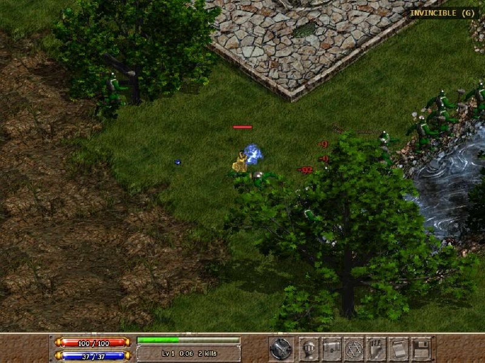
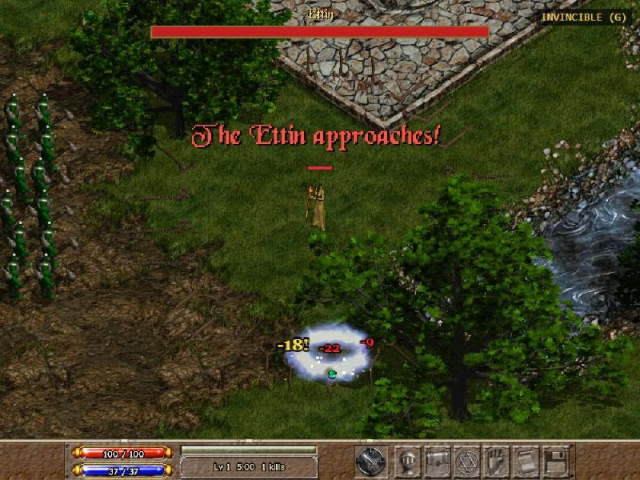
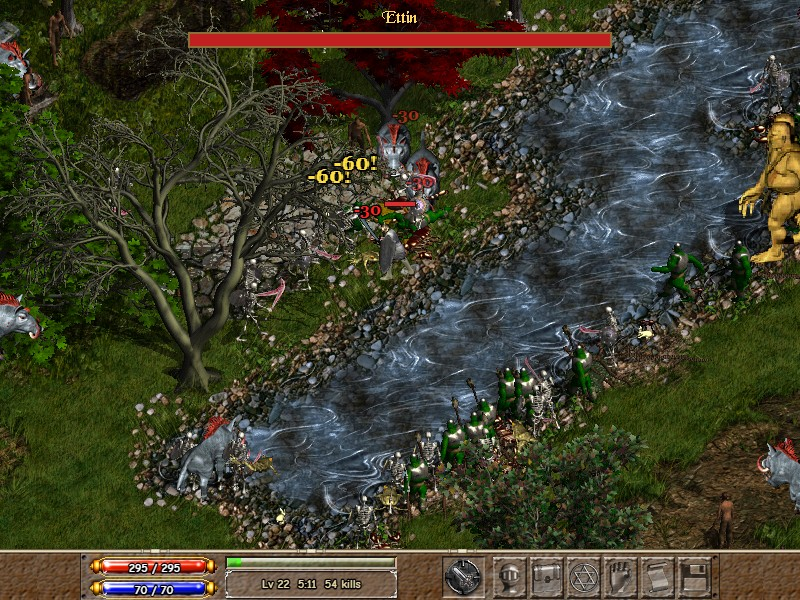
- Los jefes son más grandes, no retroceden al ser golpeados y tienen una barra de vida arriba.
- Ettin y Demon sueltan un cofre al morir.
- Fire Wyvern (minuto 12): corta las oleadas, ya no salen más monstruos normales. Lanza 3 bolas de fuego cada 2,6 s y llama a sus esbirros: 6 Stone Golems o ranas cada 8 s, en un anillo a su alrededor (máximo 24 vivos).
- La música cambia sola: middleland en la partida, dungeon con un minijefe, abaddon con el jefe final.
- Ritmo de niveles: el objetivo es llegar a los niveles 24–28. Los 4 primeros niveles llegan en el primer minuto (15, 30, 50 y 80 de XP); desde el 5, cada nivel cuesta un 24 % más que el anterior (150 de XP el 5→6), y a mitad de partida sale uno cada 30–45 s.
Victoria y derrota
Matar al Fire Wyvern no acaba la partida de golpe. Hay un final en cuatro pasos:
- Mueren todos los monstruos de golpe (cuentan como bajas) y cae el cofre grande del Wyvern. Sale el aviso "Open the chest to leave!".
- Toda la experiencia del suelo vuela hacia ti y los niveles que da suben solos, sin cartas, con su sonido. La pantalla de victoria dice el nivel que alcanzaste.
- Al coger el cofre recibes un buff y, un segundo después, se abre un portal a un lado. Arriba cuenta "Enter the portal: 30".
- Si entras en el portal, o esperas esos 30 segundos, ganas.
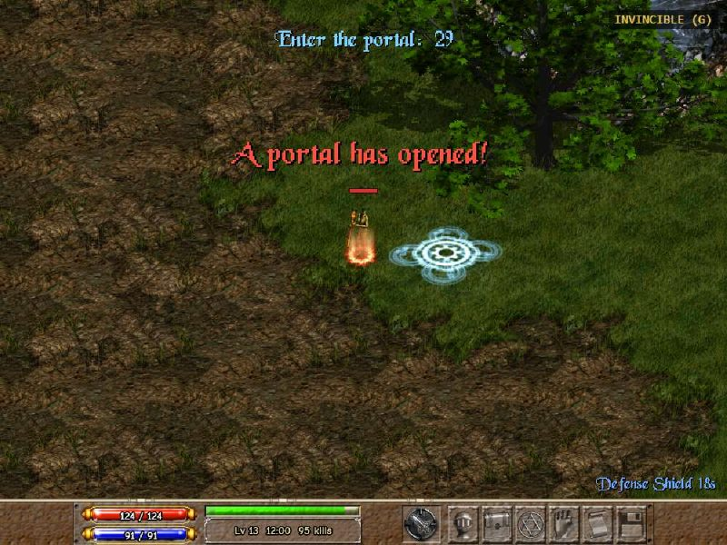
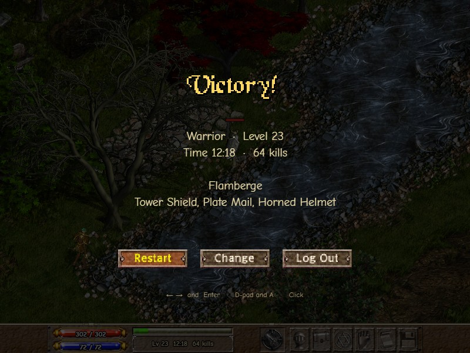
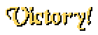
Al final de la partida sale un resumen: clase, nivel, tiempo, bajas, arma o hechizo y armadura. Al morir sale "You have fallen".
- Restart: otra partida con la misma clase.
- Change: volver a elegir clase.
- Log Out: volver al menú principal.
Por dentro
- Tecnología: Phaser 3 y TypeScript, sobre helbreath-base-game, una base libre (licencia MIT) que ya sabía leer los gráficos
.spry los mapas.amdde Helbreath. - Datos separados de la lógica: vida, daño, oleadas y requisitos viven en archivos de datos. El equilibrio se ajusta sin tocar el código.
- Rendimiento: enemigos, proyectiles, gemas y números de daño se reutilizan en lugar de crearse y destruirse. Probado a unos 120 FPS con cientos de monstruos en pantalla.
- Descarga: los monstruos de las oleadas siguientes se bajan en segundo plano mientras juegas, y solo los del mapa: los que no se usan no se descargan.
- Partidas simuladas: el juego sabe jugar solo, unas 100 veces más rápido, para medir el equilibrio (nivel por minuto, cuánto vive cada jefe) sin jugar 12 minutos cada vez.
- Assets registrados: cada gráfico y sonido tiene un nombre propio (
enemy.orc,fx.fireball), así que podrían cambiarse por arte original sin tocar el resto. - Publicación: GitHub Pages, que se actualiza solo con cada cambio en la rama principal.
Estado del proyecto
- 0Reconocimiento del código y los assetshecha
- 1Esqueleto y primer spritehecha
- 2Mapa y jugadorhecha
- 3Enemigoshecha
- 4Primera arma y combatehecha
- 5Experiencia y subida de nivelhecha
- 6Arsenal completo, objetos y pasivashecha
- 7Oleadas, jefes y finalhecha
- 8Menús (el Archer queda aplazado)hecha
- 9Web, móvil y publicaciónhecha
- 10Pulido: interfaz del móvil, HUD elegible y sensación de impacto (temblor, partículas, sonidos)hecha
- 11Pulido de interfaz: árboles grandes, How to Play, selección de personaje en el móvilhecha
- 12Móvil sin pérdidas: instalar como app, partidas guardadas y Settings táctilhecha
- 13Jefe final y equilibrio: portal, monstruos por mapa, estampidas y curva de XPhecha
- 14Métricas y logrossiguiente
Problemas conocidos
- El equilibrio está afinado solo con partidas simuladas, no con mucha gente jugando. Por eso la Fase 14 medirá partidas reales.
- No hay búsqueda de caminos: algunos monstruos se quedan tras un obstáculo si estás al otro lado (en Bleeding Isle pasa mucho menos que en el mapa anterior). Si quedan lejos, se recolocan.
- A 800×600 (el tamaño original de Helbreath) el personaje se ve pequeño.
- Al continuar una partida guardada no vuelven los monstruos, las gemas ni los objetos del suelo.
- Solo hay un mapa por ahora.
Mejoras posibles
Ideas del plan de la segunda etapa. Solo está decidida la siguiente fase; el resto puede cambiar de orden. Casi todas tienen ya los gráficos y sonidos necesarios en los archivos de Helbreath.
Segunda etapa
Métricas y logros
Un resumen anónimo de cada partida en un servidor pequeño, para equilibrar con datos reales, y los primeros logros.
Apuntado híbrido
Automático por defecto; manual con el ratón o el stick derecho.
Critical Strike
Un botón para lanzar el "crit" de Helbreath, con grito incluido. Cargas que crecen con el nivel y se recargan con el tiempo. Con vibración del mando y reasignar controles.
Zemstone of Sacrifice
Una vida extra: si mueres llevando el Zem, revives con media vida. Solo se puede llevar uno.
Minimapa y tótems
Miniatura original del mapa en una esquina, con jefes, cofres y pociones. Y tótems en el mapa que dan buffs.
Más mapas
Varios mapas, una pantalla para elegirlos, récords locales por mapa y sombras. Primero Icebound (con el Wyvern de hielo); después otros, uno por bloque.
La ciudad y el baúl
Un mapa pequeño tras elegir personaje, con NPCs, un cofre y el portal a la partida. Equipar armas y armaduras que sueltan los jefes y se guardan entre partidas.
Aresden y Elvine
Elegir bando al empezar: capa, colores, música y quién te ataca en las Raids. Quizá desbloquear objetos Hero.
Raids
"Jugadores" enemigos del otro bando, dibujados como el jugador: guerreros que lanzan crits y magos que te frenan con hielo.
Ranking online
Opcional. Reutilizaría el servidor de las métricas.
Sin fecha
- Archer, el tercer personaje, con arco.
- Achievements de verdad (la Fase 14 empieza con los primeros).
- Elegir sexo, piel y pelo en la creación de personaje.
- Activar las familias apagadas: Hammer, Axe, Fencing, y los hechizos Lightning, Ice y Meteor.
- Monstruos que aparecen al azar como evento especial.
Trucos de prueba
Solo funcionan en la versión de desarrollo (en local), durante una partida.
| Tecla | Efecto |
|---|---|
| G | Modo dios: no recibes daño (personaje dorado) |
| X / L | Sube 1 nivel / sube 5 niveles |
| K | Mata a los enemigos visibles |
| N | Hace aparecer 100 enemigos |
| J / M | Adelanta 1 minuto / salta al siguiente jefe |
| V / B | +10 Str / +10 Int y Mag |
| P | Suelta una poción, un imán y un cofre |
| F1 | Panel de depuración (también en la versión publicada) |
Créditos y aviso legal
Helbreath © Siementech Co. Ltd. Base técnica: helbreath-base-game (MIT), de Erko Knoll. Fuente de la interfaz: Comic Neue (SIL Open Font License).
Proyecto fan no oficial, gratuito y sin ánimo de lucro: sin anuncios, sin pagos y sin publicar en tiendas comerciales. Los gráficos, sonidos y la fuente dibujada de Helbreath que aparecen en esta guía pertenecen a sus dueños.